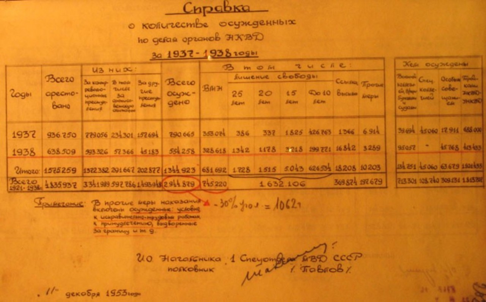

Переписки 1912-1927
Главный миф о Сталинских репрессиях
☭USSR HISTORY DOCUMENTS



Главный миф о Сталинских репрессиях
Миф: Сталин был жестоким тираном который репрессировал 100млн человек.
Реальность: Сталин за всё время правления, репрессировал не больше 1млн человек.
Опровержение 1: где скелеты репрессированых? Выходит где то под Россией сейчас лежит 100млн скелетов?
Опровержение 2: Население Российской Империи в 1990 году составляло около 120млн человек. До Сталина было три войны (японо-русская война, первая мировая война, гражданская война). Общие потери этих войн составляет около 20млн человек. Если бы Сталин репрессировал 100млн человек, население СССР равнялось бы НУЛЮ.